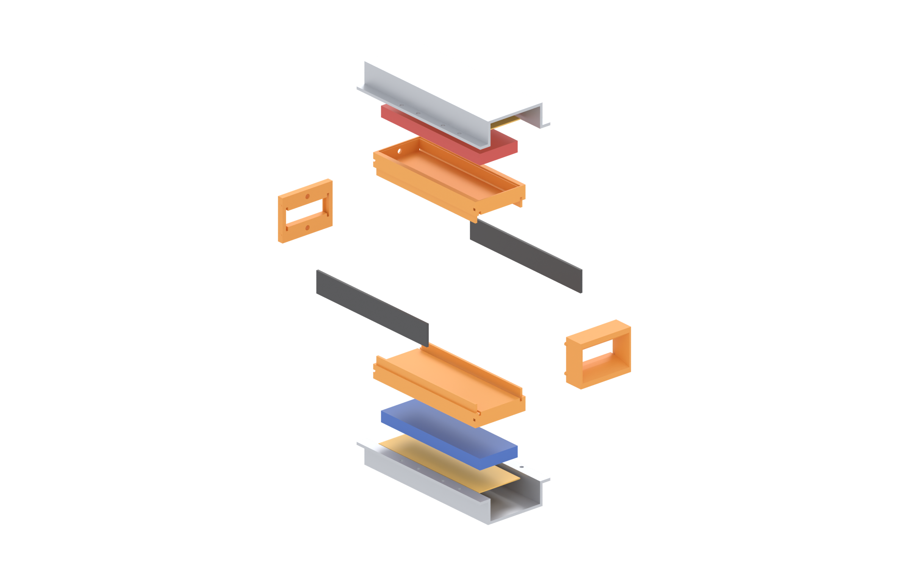
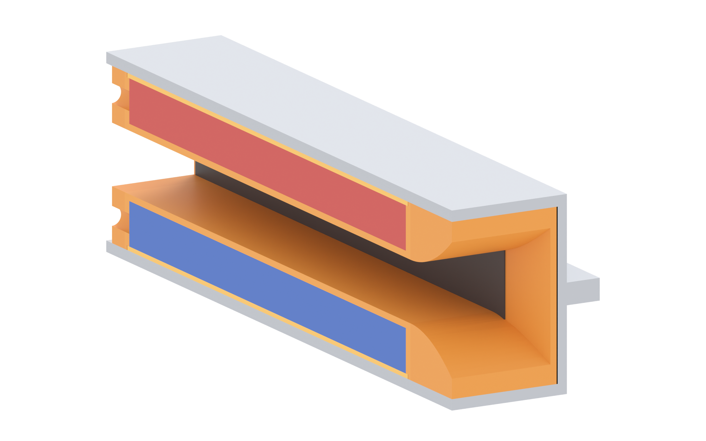

Brine runs through a 40 × 14 mm bore. A 483 mT field crosses it, current flows between two graphite plates on the side walls, and the Lorentz force pushes the water out the straight end. The steel is a folded 2.5 mm clamshell and it is the magnetic return path — not a cosmetic box.

| z | Layer | Thickness | Function |
|---|---|---|---|
| 0 – 7 | bore | 14 tall | water channel, 40 wide |
| 7 – 8.5 | tray floor | 1.5 | the only thing between water and magnets |
| 8.5 – 18.5 | magnet in cavity | 10 | walled in on all four sides |
| 18.5 – 19.5 | cap | 1.0 | locks the magnets down, flush with the steel |
| 19.5 – 22 | steel plate | 2.5 | flux return |

metal/| File | Qty | Material | Notes |
|---|---|---|---|
clamshell-flat-2.5mm.dxf | 2 | 2.5 mm mild steel (DC01 / SPCC / AISI 1008) | Blank 107.83 × 150. Laser cut, 8 × Ø3.4 holes, then folded twice. One blank per half; mirror one after folding. |
plastic/| File | Qty | Size | Notes |
|---|---|---|---|
tray.stl | 2 | 124 × 51.5 × 19.5 | Magnet cavity 120 × 40 × 10 with a 1 mm ledge for the cap. Print the floor side down. |
cap.stl | 2 | 121.7 × 42.7 × 1.0 | Thin lid. Print flat, 100 % infill — it is a clamp, not a shell. |
bellmouth.stl | 1 | 20 × 52 × 39 | 48 × 30 mouth closing to 40 × 14. Print mouth-up, supports only in the bore. |
rear_block.stl | 1 | 5.5 × 52 × 39 | Outlet. Has the 4.4 mm lead exit; keep that hole clear. |
| Item | Qty | Notes |
|---|---|---|
| N52 tile 20 × 10 × 5, nickel plated | 96 | 48 per face: 6 along × 4 across × 2 deep. Two tiles stacked = one 10 mm bar. |
| Graphite plate, 134 × 14 × 2 | 2 | Anode and cathode. 3 mm of each end is buried in plastic — 124 mm is wetted. |
| M3 × 16 bolt + nut + washer | 8 | Through the folded flanges at the split line. |
| M3 grub screw or 3 mm dowel | 2 | Optional registration pin — see step 6. |
| Epoxy (slow, 30 min+) | — | Magnets to tray. Not on the flange faces. |
| Parameter | Value | Where it comes from |
|---|---|---|
| Sheet thickness | 2.5 | one gauge for the whole half — walls and plate |
| Flat blank | 107.83 × 150 | 56 plate + 2 × (19.96 wall + 5.96 flange) |
| Inside bend radius | 0.2 | sharp; a knife-edge die is fine at this gauge |
| K-factor | 0.44 | typical for mild steel at R/t ≈ 0.08 |
| Bend allowance | 2.042 | (R + K·t)·π/2 per 90° bend |
| Fold line, from the blank edge | 47.96 | marked on the DXF FOLD layer |
| Mass per half | 317 g | 7.85 g/cm³ |
| Part | Layer | Walls | Infill | Orientation |
|---|---|---|---|---|
| tray | 0.2 | 4 | 40 % | floor down; the cavity prints open-side up with no supports |
| cap | 0.16 | 3 | 100 % | flat — it is 1 mm, any warp is a leak path |
| bellmouth | 0.2 | 3 | 25 % | mouth up, bore vertical |
| rear_block | 0.2 | 4 | 40 % | flat face down |
PLA is fine for a demo run; PETG if the water is warm or the pump runs long. The tray floor is a 1.5 mm water barrier — if it leaks, the magnets are gone, so keep that face solid and inspect it against a light before assembly.
Cut two blanks from clamshell-flat-2.5mm.dxf. Fold 90° along both
dashed lines: fold 1 at 47.96 from the edge (wall), fold 2 at 5.96 further in (flange).
Check the folded part: 56 mm across the plate, 22 mm from the plate to the flange face, holes on the split line.
The tray is a cup, not a plate: floor on the bottom, walls on all four sides. Eight tiles per row, four rows, two layers deep — 48 per face. Two layers of 5 mm tiles = one 10 mm bar, filling the cavity 8.5 → 18.5.
Compass-check every row before the epoxy sets. All four rows on one face point the same way; the opposite face points the other way. If one row is flipped the pump stalls in that quarter of the bore.
Drop the 1 mm cap into the ledge in the tray rim. It sits on the magnets, its top face flush with the steel inner face. It is what stops the stack lifting when the field pulls.
No glue needed if the fit is right; a bead around the rim is acceptable, a puddle is not — excess epoxy that runs into the bore is a flow obstruction you cannot reach.
Each 134 × 14 × 2 graphite plate slides into the 2.2 mm slot in the tray wall from the end. 3 mm of its height is buried in the tray, 14 mm is exposed to the water — that exposed 124 × 14 = 1736 mm² is the working area.
Push each plate in until its end sits 5 mm inside the bellmouth or rear block pocket. That pocket is the seal: it holds the end and keeps water from sneaking behind the plate.
Four 3 mm pegs each. The bellmouth takes the 48 × 30 mouth down to the 40 × 14 bore over 20 mm — this is what keeps the inlet flow attached.
The rear block carries the 4.4 mm lead exit at 13.5 mm off the mid-plane, one per half. Thread the magnet wires out through it and seal the hole with epoxy after. Leave the outlet straight: a diverging nozzle was measured to drop boat speed from 0.3 to 0.2 m/s through recirculation.
Lower tray assembly into the bottom half, upper into the top half, then bring the halves together. Drop 8 × M3 through the flanges and tighten in a cross pattern, a little at a time, so they seat flat instead of rocking.
The flanges are 8 mm strips meeting edge to edge around Ø3.4 holes, so location comes from the bolt shanks. If the pump will be knocked around, add two 3 mm dowels through the flanges before final torque.
| Joint | Clearance | Consequence if wrong |
|---|---|---|
| magnet in tray cavity | 0.3 per side | press fit cracks tiles |
| cap in rim ledge | 0.15 per side | cap lifts, magnets float up into the steel |
| tray in steel cavity | 0.1 per side | tray rattles, wears through the 1.5 mm floor |
| electrode in slot | 0.2 total | water bypasses the plate, current skips the bore |
| electrode end in pocket | 5 mm deep | short end = leak behind the electrode |
| flange faces | 0 (metal to metal) | any gasket = air gap in the return path |
| M3 in flange hole | Ø3.4 | standard M3 clearance |